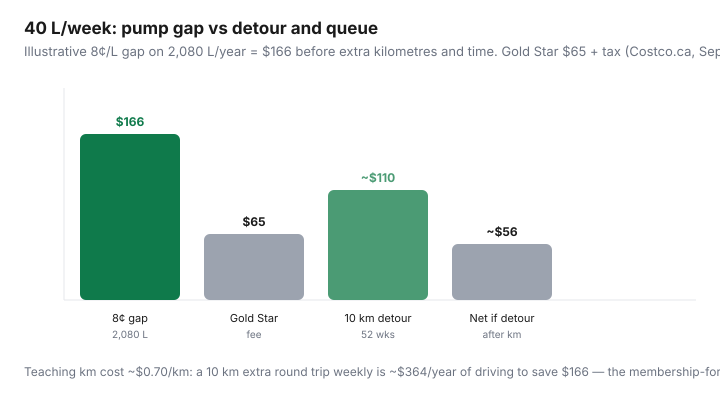

Transportation · Canada
Is Costco gas worth the detour in Canada? Membership math for drivers
Canadian Costco gas is members-only, often a few cents below nearby majors — and it is also a one-way maze with a queue that can eat the gap. Drivers treat the warehouse club like a loyalty program and skip the detour arithmetic: extra kilometres, twenty minutes in line, payment quirks, and the loyalty stack at the Esso already on the way home. This page is driver math for whether Costco gas is worth the trip. The grocery-plus-membership ROI lives in Costco gas vs Gold Star.
Verify the board at your warehouse this week. GasBuddy beats a national average. Educational only — not a membership pitch.
Disclosure: Costco memberships, the CIBC Costco Mastercard, and competing gas-rewards cards (PC Financial, RBC Petro, Scene+ cards) are offer types. Saving Optimizer may earn a commission if we later add partner links. We do not currently claim Costco, CIBC, or issuer partnerships. Confirm fees on Costco.ca and the issuer’s site. Pay cards in full.
Key takeaways
- You need an active Costco membership (or a Costco Shop Card) to pump. Gold Star is $65 plus tax (Costco.ca, reviewed Sep 2026). Executive 2% excludes gas.
- Canadian explainers still cite about 5–10¢/L under nearby majors. That is a teaching band. Independents sometimes win on the street sign.
- Time and kilometres are costs. A weekly 10 km extra round trip at a teaching $0.70/km is ~$364/year — enough to erase an 8¢ gap on 2,080 L ($166).
- Combine the fill with the warehouse shop. Gas-only pilgrimages lose to a closer Esso/Petro/Shell stack when the posted prices are close.
- Payment: Mastercard, Interac debit, Shop Card. No cash at the pump. CIBC Costco Mastercard public earn includes 3% at Costco gas (January shop card; category caps apply).
Who can pump Costco gas (membership rules)
Costco Canada gasoline FAQ: the station follows the warehouse rule. Insert membership card or the co-branded Mastercard so the pump can read the membership number. Expired cards may get one courtesy authorization, then a block until you renew at the membership counter. Shop Card holders can pump without being members — anyone can use a Shop Card, and it authorizes the pump — but Shop Cards are sold and reloaded by members. Non-members cannot wander in on Visa. Costco does not take cash or cheque at the pump (pre-authorization holds are often the lesser of your issuer’s limit or about $200).
Not every warehouse has fuel. If yours does not, this article is theoretical. Do not drive to the next city for 8¢/L.
Typical ¢/L gap vs nearby majors—how to check locally
Wealth North and other 2026 Canadian membership explainers still use a 5–10¢/L band versus surrounding majors. Costco does not publish a guaranteed discount. Urban stations can be aggressive one Wednesday and merely average the next. Check:
- GasBuddy or the street signs on your actual commute the morning you will fill — not a screenshot from 2024.
- The Costco board on the way in (it is visible before you commit to the maze).
- One independent and one major (Esso / Petro-Canada / Shell) you would have used anyway.
If Costco is 3¢/L cheaper and you will wait 15 minutes, the major plus a 3¢ card discount is the same money and less life. If Costco is 12¢ cheaper and the line is four cars, fill.
Time and distance cost of the detour
Teaching all-in driving cost ~$0.70/km (not a CRA binding rate — use your TCO). Extra 5 km each way is 10 km per fill. Weekly fills: 520 km/year × $0.70 ≈ $364 of “cheap gas.” At an 8¢/L gap you need 4,550 L to cover that detour — more than two typical drivers. A 2 km extra round trip is $0.70 × 2 = $1.40; on 40 L that is 3.5¢/L of friction. Add queue time: 15 minutes twice a week is 26 hours/year. At even $15/hour that is $390 of standing still.

Combining warehouse shop + fill vs gas-only trips
The pattern that survives: one planned warehouse trip for pantry and protein you will freeze, then fill on the way out when the line is short (weekday mid-morning, not Saturday noon). That is the cart split, not a fuel club. Gas-only Tuesday lunches are how $166 of pump gap becomes a part-time job. If you never shop the warehouse, you are paying $65 plus tax for a gas membership. That can be rational at 3,000 L and a 2 km detour. It is odd at 400 L.
Payment quirks and pump etiquette that waste time
- Have the membership card (or CIBC Costco Mastercard) ready before you pull up. The car behind you is why people rage-quit to the Petro across the road.
- Hoses reach both sides. Pick the shortest lane, not “driver side only.”
- One-way traffic. If you miss the entrance, you do not reverse through the maze — you leave and lose the gap.
- Pre-authorization holds can look like $200 on debit for a day. Know your bank’s hold behaviour before you panic.
- No cash. If the Mastercard is declined, you are a decorative SUV in a live lane. Keep a backup debit or Shop Card.
When Esso/Petro/Shell stacks beat Costco street price
Shop the posted litre first, then stacks:
- Esso/Mobil + PC Optimum: 10 pts/L; more with a PC Mastercard. Wins when Esso is already on the commute and Costco is a 15-minute line. Esso worksheet.
- Petro-Canada + Platinum / RBC: instant ¢/L can match a small Costco gap without a membership or a maze. Platinum litres.
- Shell + Scene+ / Go+: instant 3¢ on linked Scotia/Tangerine plus points. Nationwide Scene+ from 26 May 2026.
- Independents: a 12¢ cheaper no-name still beats Costco plus a line.
CIBC Costco Mastercard (public benefits guide, reviewed Sep 2026): 3% at Costco gas in Canada, 2% other gas/EV, on the first $5,000 combined annual in that gas/EV category, then 1%. Paid as a January Costco shop card. On 2,080 L at $1.50/L, 3% is about $94 — real, if you pay in full and wait until January. Interest erases it. Executive 2% still does not see gas.
Sample break-even for 40 L fills per week
| Scenario | Pump save | Friction | Net vs $65 |
|---|---|---|---|
| 8¢/L, on the way, no queue | $166 | ~$0 extra km | Covers Gold Star; keep it |
| 8¢/L, 10 km extra weekly | $166 | ~$364 driving | Negative — skip |
| 5¢/L, combined with monthly shop | $104 | Shop trip already happening | Covers Gold Star if groceries also behave |
| 3¢/L + 15 min line twice a week | $62 | Time + maybe 3¢ card at a major | Stay home; use the commute station |
Log four fills: station, ¢/L, litres, extra minutes, extra km. If Costco is not winning that log, stop telling yourself the membership is “free on gas.” If it is winning on the warehouse day only, fill only then. Stay Gold Star until eligible merchandise — not gasoline — says Executive. Full membership choreography: is Costco worth it in Canada?
Sources & date stamps
- Costco.ca membership FAQ — Gold Star $65, Executive $130 (plus tax), reviewed Sep 2026.
- Costco Canada gasoline Q&A — members only; Shop Card exception; Mastercard/debit; pre-authorization; one-way traffic.
- Costco Canada membership-counter FAQ (published 10 Sep 2025, still cited 2026) — expired card courtesy then block.
- CIBC Costco Mastercard benefits guide, reviewed Sep 2026 — 3% Costco gas, category cap, January shop card.
- Executive 2% terms — gas excluded (as in the grocery Costco-gas guide, 16 Sep 2026).
Frequently asked questions
Can I buy Costco gas in Canada without a membership?
Almost never. The pump checks an active membership card or the co-branded Mastercard. The documented exception is a Costco Shop Card, which authorizes the pump. Cash is not accepted at the pump.
Is Costco gas always the cheapest in Canada?
No. Many weeks it is 5–10¢/L under nearby majors, and some weeks an independent wins. Check GasBuddy and the street signs the morning you fill. Do not use a 2022 screenshot.
Does Executive 2% apply to Costco gas?
No. Costco Canada’s Executive reward excludes gas-station purchases. Treat pump savings as Gold Star value. Do not upgrade to Executive because of the fuel bill.
When is the detour not worth it?
When extra kilometres at a realistic per-km cost, plus queue time, exceed the ¢/L gap on the litres you actually buy. A weekly 10 km detour can erase an 8¢ gap on a single-car 40 L/week habit.
Do gas rewards cards beat Costco?
Sometimes. If Esso, Petro-Canada, or Shell is already cheaper or on your commute, a 3–7¢ instant card stack plus no maze can beat a small Costco gap. Shop the posted litre first.